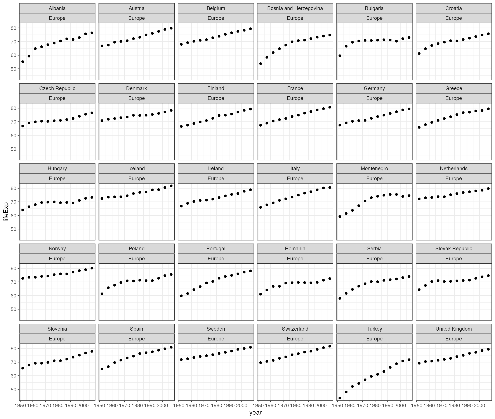
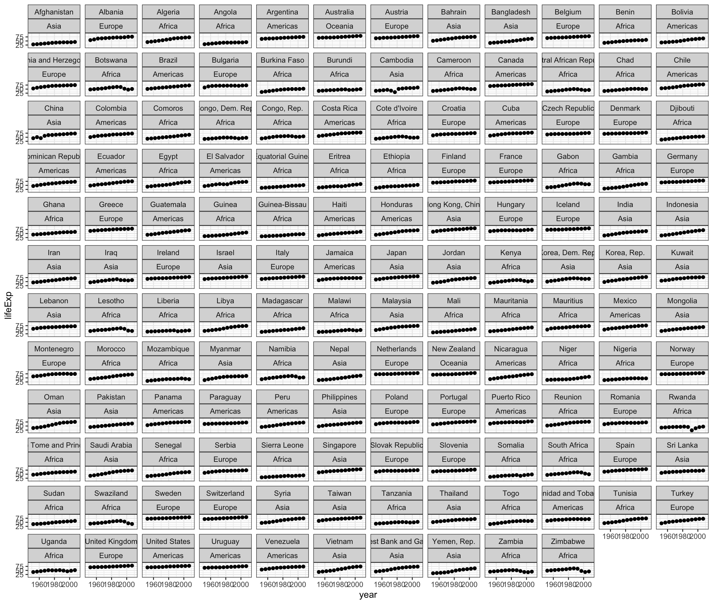

Trelliscope is a visualization approach based on the idea of “small multiples” or “Trellis Display”, where data are split into groups and a plot is made for each group, with the resulting plots arranged in a grid. This approach is very simple yet is considered to be “the best design solution for a wide range or problems in data presentation”. Trelliscope makes small multiple displays come alive by providing the ability to interactively sort and filter the plots based on summary statistics computed for each group.
The trelliscopejs R package is an interface for creating Trelliscope displays with the goal of providing methods that are convenient to use in traditional visual / analytical workflows. For example, the package provides methods that allow you to easily generate Trelliscope displays from ggplot2 or “tidy” workflows.
At the core of the trelliscopejs is a JavaScript library, trelliscopejs-lib, which provides the interactive viewer for the displays, and the R package is an htmlwidget around this library, meaning that it is easy to share your displays whether through embedding in an RMarkdown document / notebook or simply sending the resulting html file to someone or hosting on the web.
You can install trelliscopejs from CRAN with the following:
To intall the latest development version:
# install.packages("remotes") # if "remotes" is not already installed
devtools::install_github("hafen/trelliscopejs")Any other package that you see in this document that is not already installed along with trelliscopejs will be available on CRAN and can be installed with install.packages().
For ggplot2 users, the easiest way to get quick results with trelliscopejs is with the function facet_trelliscope(). If you are familiar with faceting in ggplot2 using facet_wrap(), you can easily transform your static faceted plot into an interactive one by swapping out facet_wrap() with facet_trelliscope().
To illustrate, let’s look at the gapminder dataset available in the gapminder package, which provides some population statistics about many countries in the world:
Classes 'tbl_df', 'tbl' and 'data.frame': 1704 obs. of 6 variables:
$ country : Factor w/ 142 levels "Afghanistan",..: 1 1 1 1 1 1 1 1 1 1 ...
$ continent: Factor w/ 5 levels "Africa","Americas",..: 3 3 3 3 3 3 3 3 3 3 ...
$ year : int 1952 1957 1962 1967 1972 1977 1982 1987 1992 1997 ...
$ lifeExp : num 28.8 30.3 32 34 36.1 ...
$ pop : int 8425333 9240934 10267083 11537966 13079460 14880372 12881816 13867957 16317921 22227415 ...
$ gdpPercap: num 779 821 853 836 740 ...We might be interested looking at life expectancy vs. year for each country in Europe:
qplot(year, lifeExp, data = subset(gapminder, continent == "Europe")) +
facet_wrap(~ country + continent) +
theme_bw()
Now suppose we want to be able to see all countries:
qplot(year, lifeExp, data = gapminder) +
xlim(1948, 2011) + ylim(10, 95) + theme_bw() +
facet_wrap(~ country + continent)
There are too many to show on a single plot. This is where we can turn to Trelliscope.
To create the same plot with Trelliscope, swap facet_wrap() for the trelliscopejs function facet_trelliscope():
qplot(year, lifeExp, data = gapminder) +
xlim(1948, 2011) + ylim(10, 95) + theme_bw() +
facet_trelliscope(~ country + continent, nrow = 2, ncol = 7, width = 300)A simple change! The output will look something like this:
Go ahead and experiment with the interactive controls of the plot above. You can click the fullscreen button in the bottom right if you want more space. The question mark icon in the upper right corner will give you more information about how to use the viewer.
Here we used a different layout of rows and columns to illustrate Trelliscope’s pagination. In the viewer you will see that there are 14 panels shown per page, and that you can use the “prev” and “next” buttons to page through the panels. You can change the layout in the “Grid” controls. Also, we can now filter the panels based on various summaries that were computed for each panel.
For example, we might want to only look at panels for a certain continent, such as Africa. Or we might want to sort the panels on mean life expectancy. You can see what variables are available opening the “Filter” or “Sort” controls.
You can see some of these controls in action in the video above, and we’ll discuss more about how these summaries are computed below. If you click the question mark icon in the upper right of the viewer, you can learn more about the controls and how to use them. Feel free to explore.
There are many more options in facet_trelliscope() and you can read the documentation for this function for more information and examples.
In addition to facet_trelliscope(), this package comes with a more generic trelliscope() method that fits naturally into “tidy” workflows involving dplyr / tidyr / purrr / etc.
An emerging use case for analyzing data in the tidyverse is computing summaries, models, and other transformations for each group of a data set and storing the results as a data frame with one row per group, with columns of data frames containing the data for each group and possibly additional columns containing other derived data such as models, etc. A nice example of this is illustrated in “Many Models” section of R for Data Science. That book chapter (and any necessary material preceding it) can be taken as prerequisite material to fully appreciate the visualization approach outlined in this section and fully be able to apply these techniques to your own problems. In particular, pay attention to the concepts of nested data frames and list-columns.
The example in the “Many Models” chapter uses the Gapminder data and illustrates grouping the data by country, nesting the data for each country into a new column of data frames, and then fitting a linear model of life expectancy vs. time for each group. In this example, to visualize the model results, the model residuals are un-nested and visualized in a single plot. This is a common visualization workflow: group the data, compute summaries or derived data for each group, pull all the results back together, and create a single visualization of the result. This is a good and useful thing to do, but additionally visualizing the detailed per-group data is invariably very enlightening. This is where Trelliscope comes in.
Let’s set up a scenario in which we will produce a plot similar to the Gapminder plot we created using facet_trelliscope(), but using nested data frames and list-columns.
We want to plot life expectancy vs. year by country. So first we will group our data frame by country and continent and thenc call tidyr::nest() to obtain a data frame with one row per country and continent with each unique country’s data stored in a new column of nested data frames, data:
library(tidyverse)
library(gapminder)
by_country <- gapminder %>%
group_by(country, continent) %>%
nest()
by_country# A tibble: 142 x 3
# Groups: country, continent [710]
country continent data
<fct> <fct> <list>
1 Afghanistan Asia <tibble [12 × 4]>
2 Albania Europe <tibble [12 × 4]>
3 Algeria Africa <tibble [12 × 4]>
4 Angola Africa <tibble [12 × 4]>
5 Argentina Americas <tibble [12 × 4]>
6 Australia Oceania <tibble [12 × 4]>
7 Austria Europe <tibble [12 × 4]>
8 Bahrain Asia <tibble [12 × 4]>
9 Bangladesh Asia <tibble [12 × 4]>
10 Belgium Europe <tibble [12 × 4]>
# … with 132 more rowsWe can now do all kinds of per-group operations by operating on the rows of this data frame or on elements of the columns of this data frame, and we can even attach these results as new columns of the data frame, allowing us to keep all per-group computations organized by group in a familiar data structure. For example, in “R for Data Science” takes this result and fits a model to each group using purrr::map().
Let’s go ahead and add the model fit as well:
country_model <- function(df)
lm(lifeExp ~ year, data = df)
by_country <- by_country %>%
mutate(model = map(data, country_model))
by_country# A tibble: 142 x 4
# Groups: country, continent [710]
country continent data model
<fct> <fct> <list> <list>
1 Afghanistan Asia <tibble [12 × 4]> <lm>
2 Albania Europe <tibble [12 × 4]> <lm>
3 Algeria Africa <tibble [12 × 4]> <lm>
4 Angola Africa <tibble [12 × 4]> <lm>
5 Argentina Americas <tibble [12 × 4]> <lm>
6 Australia Oceania <tibble [12 × 4]> <lm>
7 Austria Europe <tibble [12 × 4]> <lm>
8 Bahrain Asia <tibble [12 × 4]> <lm>
9 Bangladesh Asia <tibble [12 × 4]> <lm>
10 Belgium Europe <tibble [12 × 4]> <lm>
# … with 132 more rowsWe now have a new column, model which contains the model fit result for each country.
The main idea to communicate with Trelliscope in the tidyverse is that in addition to storing results of per-group summaries or models as list-columns, we also store per-group plots as list-columns and use a function trelliscope() to visualize them. This is quite straightforward to do and is accomplished using a family of purrr-like map functions specifically for returning plot list-columns.
The functions available are:
map_plot()map2_plot()pmap_plot()by_row_plot()These are all basically wrappers around the corresponding purrr functions (purrr::map(), purrr::map2(), etc.) that indicate that an output is a list of plots. These functions can be used to operate over columns of a data frame to apply a user-defined plotting function to each group. Your plot function can return a wide variety of plot objects, including ggplot2, lattice, and htmlwidgets.
Let’s look at an example. With our nested Gapminder data, let’s use map2_plot() to add a plot column to our data set which plots both the raw data and the fitted line. map2_plot() allows us to specify two columns (we’ll want to use the columns data and model) as input to our plot function, whereas we can only specify one column with map_plot(). In this example we use the rbokeh package, which is an htmlwidget, to create the plots.
library(rbokeh)
library(trelliscopejs)
country_plot <- function(data, model) {
figure(xlim = c(1948, 2011), ylim = c(10, 95), tools = NULL) %>%
ly_points(year, lifeExp, data = data, hover = data) %>%
ly_abline(model)
}
by_country <- by_country %>%
mutate(data_plot = map2_plot(data, model, country_plot))
by_country# A tibble: 142 x 5
# Groups: country, continent [710]
country continent data model data_plot
<fct> <fct> <list> <list> <trllscp_>
1 Afghanistan Asia <tibble [12 × 4]> <lm> <rbokeh>
2 Albania Europe <tibble [12 × 4]> <lm> <rbokeh>
3 Algeria Africa <tibble [12 × 4]> <lm> <rbokeh>
4 Angola Africa <tibble [12 × 4]> <lm> <rbokeh>
5 Argentina Americas <tibble [12 × 4]> <lm> <rbokeh>
6 Australia Oceania <tibble [12 × 4]> <lm> <rbokeh>
7 Austria Europe <tibble [12 × 4]> <lm> <rbokeh>
8 Bahrain Asia <tibble [12 × 4]> <lm> <rbokeh>
9 Bangladesh Asia <tibble [12 × 4]> <lm> <rbokeh>
10 Belgium Europe <tibble [12 × 4]> <lm> <rbokeh>
# … with 132 more rowsThe by_country data frame now has a new column, data_plot that contains the plot object for each group. In addition to storing nested data in our data frame, we are storing plots!
We can now pipe this into a call to trelliscope():
The output will look like this:
The trelliscope() function takes a data frame as input. At a minimum, it expects this data frame to have a plot column (if there is more than one plot column, you can specify which one to use with the panel_col argument). Any additional atomic columns are made available as variables with which you can navigate the panels in your Trelliscope display.
The additional arguments to trelliscope() are very similar to that of facet_trelliscope(). All trelliscopejs displays must have names. In the ggplot2 examples above, if a name is not specified, it is inferred from the ggplot2 object.
Looking at this example, this is a conceptually very interesting way to think about what we are doing with faceted plots. As noted, we are creating plots as per-group “summaries”, and using other summary statistics to help us navigate the space of these plots. “Summary plots” based on summary statistics coupled with detailed “plot summaries” of the raw data from which summaries are computed is a powerful combination for exploratory data analysis.
Although the facet_trelliscope() approach with ggplot2 is usually more concise and elegant, I tend to prefer this tidy approach. First, there is more flexibility in what plotting library you use (you can still use ggplot2, of course). But I prefer the flexibility of being able to shape the data for each subset in the way I want for plotting (group first and reshape in an endless number of ways rather than specify the grouping with the “facet” functions).
Summaries that are used to navigate a Trelliscope display have a special name, “cognostics”. This is a term coined by John Tukey that you can read more about here.
trelliscopejs tries to make the specification of cognostics as easy as possible. As you have noticed in tidy example above, any available atomic variables in a data frame are automatically turned into cognostics. Also, note that since the original data is preserved in the nested data column, trelliscope() detects this and computes automatic cognostics for the variables in that column. Currently these automatic summaries are simply means if the variable is numeric, and the value of any categorical variable that is fixed within each group. The same is done for facet_trelliscope() as you may have noticed above. We will be adding more automatic cognostics in the future, particularly geared toward extracting cognostics based on the context of what is being plotted (see “upcoming work” below).
The trelliscopejs package has some convenience functions for specifying cognostics that help describe their behavior in the Trelliscope viewer. One of the most useful attributes is a cognostics description that helps the user navigating the displays know more about what the summary statistics that they are looking at mean.
Let’s add a new cognostic to our gapminder data frame that illustrates the use of cog(). Suppose we wish to be able to organize the panels of the display with respect to a goodness-of-fit measure of our linear model. Let’s add a new column, resid_mad that computes the median absolute deviation of the residuals for each country’s fit.
by_country <- by_country %>%
mutate(resid_mad = cog(
map_dbl(model, ~ mad(resid(.x))),
desc = "median absolute deviation of residuals"))The variable resid_mad will now be available in a new Trelliscope display we create with this data, and the description “median absolute deviation of residuals” will be used in the viewer to help users be oriented with what this variable means. Note that we could have left out the cog() function and the variable would still be available in the display, just without the description.
You can look at the documentation for cog() to see what other options are available.
Note that we can use data frame operations such as dplyr’s arrange() and filter() prior to calling trelliscope() to customize Trelliscope displays.
For example, I might want the default sort order of panels to be by resid_mad from high to low. I can simply order the data frame and pass the result into trelliscope() to achieve this effect:
Or suppose I only want to make a display for the country of Africa. I can use filter() to keep records only for Africa and pass this result to trelliscope():
While the examples shown so far create one-off displays, it is possible to build and maintain a collection of Trelliscope displays that are bundled together in the same viewer. This is useful for tracking and sharing multiple displays in once place, and for future functionality which will allow the ability to show panels from multiple displays created from the same grouping side by side.
To achieve this, you can simply specify a path pointing to a directory where you would like multiple displays to be organized, as an argument to facet_trelliscope(..., path = "__my_path__") or trelliscope(..., path = "__my_path__"). Any display created will be placed inside this directory and an inventory of displays will be maintained and will be available to select from in the viewer. Note that you can also use the group argument to help organize multiple displays into groups.
Using the path argument even when not creating a collection of displays is a good idea when you want your display to persist or if you want to control wher it is so you can share it.
Functions will be added in the future that allow you to treat a display as an object and modify its properties (state, name, cognostics, location, etc.) without re-creating the display every time.
While all of the examples so far have created a single application that fills the window of your viewer pane or web browser, you can embed multiple trelliscope displays inside of RMarkdown documents or RMarkdown Notebooks. When using trelliscopejs in RMarkdown documents, each display is embedded within the flow of the document (and dimensions can be controlled in the usual way), but an additional “fullscreen” button appears in the bottom right corner allowing toggling between full window mode. In RMarkdown Notebooks, however, you do not get the fullscreen option because Notebooks embed htmlwidgets as iframes rather than as an integrated part of the page.
Note that if you want to embed a plot in an RMarkdown notebook, you must specify self_contained = TRUE in your call to facet_trelliscope() or trelliscope(). This causes all of the plot dependencies to be embedded in an html page instead of saved as separate files and then loaded as the viewer needs them. This will hopefully change in the future, but self_contained = TRUE should be avoided whenever possible because especially when the number of panels is large, it’s much more efficient to save the panels as separate files and load them on demand rather than embed them all in the page and wait for them to load at the beginning.
trelliscopejs displays are also easy to share as standalone apps on the web through Github or a simple web server. For example, some of the examples from this document have been made available through Github (see here, here, and here).
trelliscopejs provides several low-level functions useful for building new interfaces. I will add more documentation for these in the future, but they are used as the building blocks for facet_trelliscope() and trelliscope() and examples of their usage can be found in the source code for these functions.
Here are a few more interesting examples of Trelliscope. You can check out my blog for upcoming posts on other interesting displays.
While the power of small multiples often lies in making rapid comparisons across many panels, it can also be useful to study individual subsets of data over a large space of subsets. A good example of this is with data available in the “housingData” package.
This package has a dataset, “housing” that gives the monthly median list and sold price for residential homes by US county, provided by Zillow. Let’s take a look at the median list price over time by county.
Here, we are going to compute our own custom summary “cognostics”, including the slope of a fitted line, the median list and sold price, the number of non-NA observations, and a special “href” cognostic, which will provide a link to Zillow showing the homes for sale in the county.
For this one I would recommend using rbokeh over ggplot2 simply because of the time it takes to generate the panels with ggplot2.
library(housingData)
housing$state <- as.character(housing$state)
housing$county <- as.character(housing$county)
slope_fn <- function(x, y)
coef(lm(y ~ x))[2]
d <- housing %>%
group_by(county, state) %>%
nest()
d <- d %>%
mutate(
cogs = map(data, function(x, state, county) {
data_frame(
slope = slope_fn(x$time, x$medListPriceSqft),
mean_list = mean(x$medListPriceSqft, na.rm = TRUE),
mean_sold = mean(x$medSoldPriceSqft, na.rm = TRUE),
n_obs = length(which(!is.na(x$medListPriceSqft)))
)
}),
zillow_link = sprintf("http://www.zillow.com/homes/%s_rb/",
gsub(" ", "-", paste(county, state)))
) %>%
unnest(cogs) %>%
filter(n_obs > 1)
d <- d %>%
mutate(
panel = map_plot(data, function(x) {
figure(xlab = "time", ylab = "median list price / sq ft", toolbar = NULL) %>%
ly_points(time, medListPriceSqft, data = x, hover = x)
})
)
d %>%
trelliscope(name = "list_vs_time",
desc = "monthly median list price vs. time for 2984 US counties from 2008–2016")Here is the resulting display:
Here we used the default of a single panel per page. While we can increase the grid size and make comparisons across counties, we are mainly interested in what is going on within each county. Because of this, we also did not fix the axes of every panel to have the same limits. Generally, you will want to do this as it makes comparisons across panels much more meaningful.
By simply paging through the panels, which by default are not very meaningfully sorted alphabetically by county and then state, we begin to get a feel for the data. The first 3 panels exhibit quite a bit of variation, while the fourth, Ada County, ID appears to be much more smooth, with a pronounced drop and rise in home prices over the course of the decade. We will see this kind of pattern in many other counties. Simply mindlessly paging has already given us some insights. Continuing on, we see Adams County, CO exhibiting a slight decrease in list price followed by a sharp incline from 2012 onward in what looks like about a 50% jump over 4 years. Certainly not all counties are the same when it comes to their home price history or whether or not they were effected by the housing crisis.
If you keep looking through you will see some counties with truly bizarre patterns that in some cases call data integrity into question (notice how several counties have a severe change point between July and August 2011, for example).
It is also fun to use this display to investigate the trend of home prices around where you live. You can do a regex filter on your county’s name or simply filter on your state and look at all the counties arranged by price or slope.
Another interesting way to look at the dislays is sorted on the slope, while filtering out counties that have a small number of observations. In which counties is real estate booming / busting?
This display works well as an app for consumers to play with to explore home prices, and it was nearly effortless to create it. However, if we are doing modeling or analysis of this data, exploring the detail in this simple display gives us plenty to think about in terms of what we might do next.
trelliscopejs is an htmlwidget interface to the trelliscopejs-lib JavaScript library. While this is a (probably) rare example of an htmlwidget where both the JavaScript and R libraries are entirely written and maintained by the same entity, trelliscopejs-lib is designed to be language-agnostic, meaning that for a new language to provide a binding to trelliscopejs-lib, it simply needs to provide a JSON specification that trelliscopejs-lib knows how to handle. The schema for this spec is settling in, but is still subject to change. More documentation will be provided as demand necessitates.
For those who are interested, trelliscopejs-lib is written using React, redux, and Webpack. Other major components include material-ui and crossfilter, and d3.
The library is available on npm and therefore over CDN using unpkg. All dependencies, fonts, css, etc. are bundled into the library and it weighs in at a little over 1MB.
It is easy to embed the library and corresponding Trelliscope displays into another web page or web application.
NOTE: this is not required knowledge for anyone who is simply creating displays with the R package, but is provided as a reference for others who may want to take displays that have been deployed and embed the viewer in their own web applications.
First, you need to load the trelliscopejs-lib library with this script tag (check for the latest version):
This attaches a function to the window called trellscopeApp() that is used to instantiate an app in a div.
Then, you create a div where you would like to embed the app. The div needs to have an ID that matches the ID provided for a given display. For example, the housing example above is shared in a github repository and in the appfiles subdirectory of the app, there is a text file id: https://github.com/hafen/trelliscopejs-demo/blob/gh-pages/housing/appfiles/id.
We give this div a class “trelliscope-not-spa” to help the application know that we are embedding the display and therefore it is not a “single-page-application”. You can embed it as a full-page application if you would like and would omit the “class” and “style”.
Finally, at the end of your html file (or wherever it is in your app that you want to make the app appear), you need to point trelliscopeApp() to the id of the div it should populate and your app’s config.jsonp that tells the viewer where all the components are. In the case of this example, we can point directly to the housing app files as they are hosted on github pages:
<script>
(function() {
trelliscopeApp('8a43f2dd',
'http://hafen.github.io/trelliscopejs-demo/housing/appfiles/config.jsonp');
})();
</script>In the future I envision trelliscopeApp() passing back “get” and “set” methods so that other applications can drive the behavior of a trelliscopejs app.